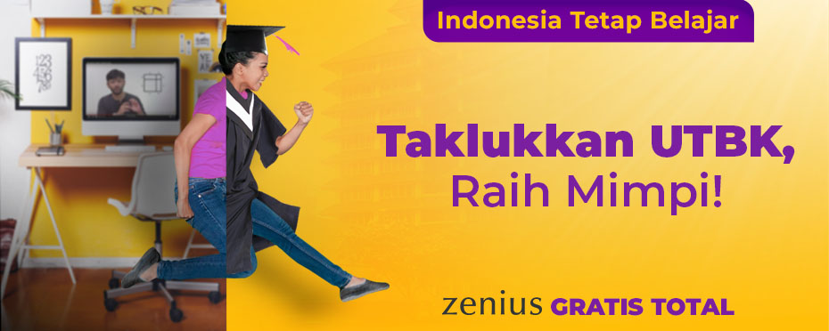

Buat kalian yang sedang mempersiapkan diri tes masuk perguruan tinggi, Zenius ada Paket Intensif UTBK dan Ujian Mandiri dengan fitur-fitur baru yang akan membantu meningkatkan pemahaman TPS dan peluangmu untuk masuk ke kampus impian.
Semenjak berdiri pada tahun 2004, Zenius udah ngalamin banyak banget yang namanya perubahan. Dari yang dulunya jualan DVD sampai akhirnya sekarang bisa dinikmati dalam wujud aplikasi. Dalam visinya ‘ merangkai Indonesia yang cerdas dan cerah ’, Zenius selalu berusaha sebaik mungkin untuk mewujudkan visi tersebut.
Berbagai macam inovasi dan keputusan besar udah dilakuin sama Zenius. Salah satunya adalah pada Bulan Desember 2019 lalu ketika Zenius menggratiskan akses ke lebih dari 80.000 video pembelajaran, ratusan ribu latihan soal dan video pembahasannya, dan fitur-fitur lain yang ada di platform Zenius. Enggak berhenti di situ, saat pandemi Covid-19 membuat kegiatan belajar mengajar dipindahkan dari sekolah ke rumah, Zenius tetap berusaha menghadirkan inovasi supaya #IndonesiaTetapBelajar secara GRATIS TOTAL dengan meluncurkan Live Class dan Rencana Belajar Harian.
Melihat UTBK dan tahun ajaran baru yang makin dekat, Zenius akan terus melakukan inovasi. Nah, gue punya 2 kabar gembira nih buat lo semua.
Pertama , ke depannya lo akan tetap bisa belajar bareng Zenius, baik lewat web zenius.net ataupun lewat Zenius App secara gratis total lengkap dengan
- Video pembelajaran,
- Rencana belajar harian,
- Live class,
- Tryout,
- Kisi-kisi ujian dan
- Persentil hasil tryout
Silakan manfaatkan fitur-fitur gratis di atas sebaik-baiknya dan sebesar-besarnya.Terlebih lagi di masa persiapan UTBK yang bakal dilaksanakan kurang lebih 1 bulan lagi.
Kedua , buat kalian yang lagi memperjuangkan kampus dan jurusan impian lewat jalur UTBK dan Ujian Mandiri, Zenius akan meluncurkan Paket Intensif UTBK & Ujian Mandiri.
Gue tahu persiapan UTBK emang engga gampang. Tingkat persaingan yang ketat, tipe soal dan sistem ujian yang beda sama ujian sekolah bisa menjadi tantangan yang bikin perasaan lo jadi campur aduk. Di sini, Zenius hadir dan terus berusaha buat bantuin lo buat mempersiapkan diri menghadapi UTBK ataupun Ujian Mandiri. Nah, salah satu hal yang mau gue ingetin adalah Zenius selalu menekankan ke elo buat belajar dari konsep. Kenapa harus dari konsep? Lo bisa baca sendiri deh betapa belajar dari konsep akan ngebantu kalian buat persiapan UTBK dan ujian-ujian lainnya di link yang gue taroh di bawah ini.
Catatan Perjuangan Murid Zenius yang Lolos UTBK SBMPTN 2019
Nah apa aja sih fitur yang ada di Paket Intensif UTBK & Ujian Mandiri?
Sesuai dengan namanya, paket ini ditujukan buat kalian yang pengen belajar secara lebih intensif lagi buat UTBK dan Ujian Mandiri. Dengan adanya paket ini, kalian bisa dapat berbagai fitur baru, yaitu:
- Pendalaman Materi Live Class bareng tutor-tutor senior Zenius
Fitur ini akan ngasih lo akses buat belajar bareng tutor senior kayak gue, Wisnu, dan Pras.
- Pembahasan Soal Eksklusif & Langsung
Nah kalau selama ini lo cuma lihat ngikutin pembahasan soal lewat videonya aja, lewat paket ini lo jadi bisa ikutan diskusi dan tanya langsung ke tutor yang ngejelasin jawaban dari soal yang lagi dibahas.
- Video Pembahasan Soal Lengkap & Komprehensif
Lo bisa nontonin video pembahasan yang lebih lengkap dan komprehensif terkait soal UTBK & SBMPTN tahun-tahun sebelumnya buat nemenin persiapan UTBK lo.
- Simulasi Real UTBK Sepuasnya
Paket ini juga ngasih akses ke lo buat jajalin Tryout sepuasnya. Kita siapin banyak paket TO yang bisa lo manfaatkan sebaik-baiknya.
Lo bisa mengakses fitur-fitur di Paket Intensif UTBK & Ujian Mandiri ini dengan harga yang terjangkau. Khusus buat elo yang masih berstatus Premium Member Zenius pada bulan Juni dan Juli 2020, lo akan secara otomatis bisa mengakses Paket Intensif ini tanpa tambahan biaya sama sekali. Paket Intensif ini bisa lo nikmatin mulai tanggal 22 Juni hingga UTBK dan Ujian Mandiri berlangsung.
Untuk informasi lebih lengkap terkait fitur, harga, dan jadwal pelaksanaan; lo bisa baca di sini ya:
Fitur Belajar yang Ada di Paket Intensif UTBK & Ujian Mandiri
Semoga dengan fitur-fitur baru ini, makin banyak siswa Indonesia yang belajarnya terbantu terutama yang sedang persiapan UTBK dan Ujian Mandiri.
Oke deh, untuk semua pembelajar Indonesia yang membaca ini, silakan belajar dan manfaatkan Zenius sepuasnya. Mari bersama kita rangkai Indonesia yang cerdas dan cerah. Raih semua mimpi dan ambisi lo, dan kami akan sangat bangga untuk menyaksikan generasi Zenius memberi kejutan hebat bagi negeri ini, bahkan dunia.

Dapatkan pengalaman belajar yang semakin seru dan bikin ketagihan dengan Zenius!